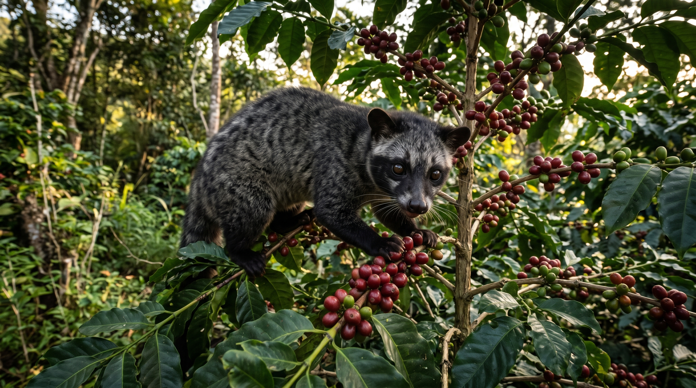
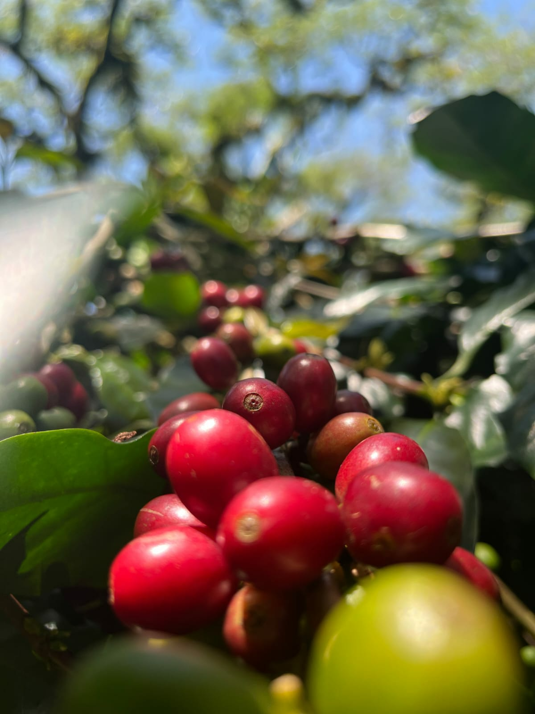
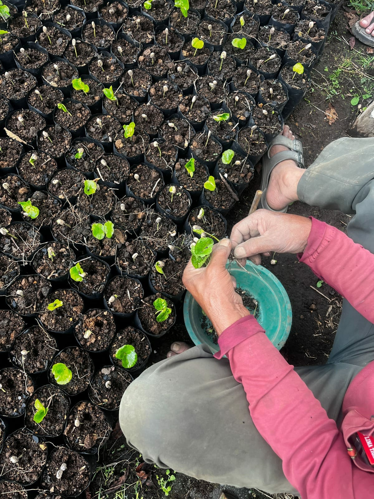
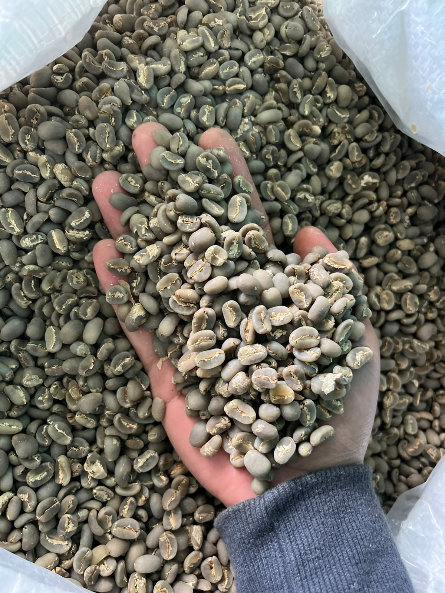
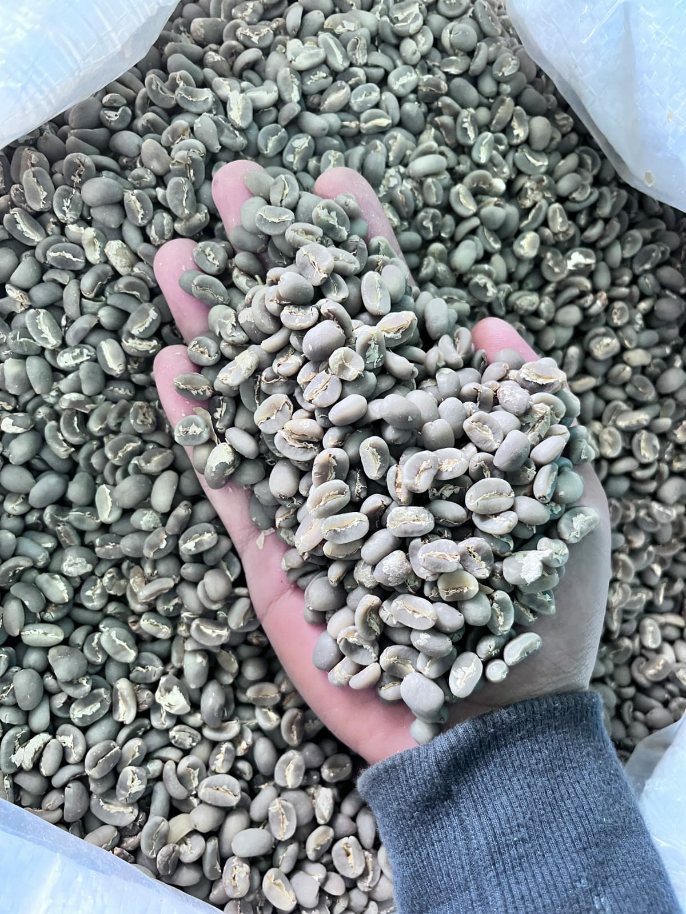
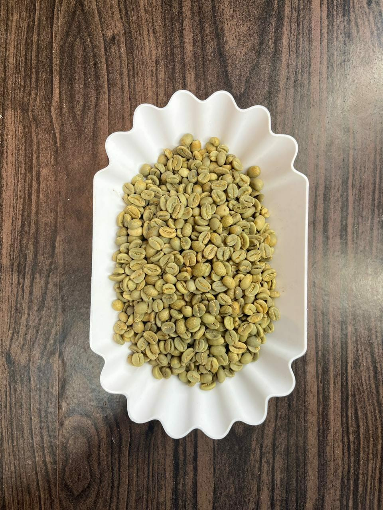
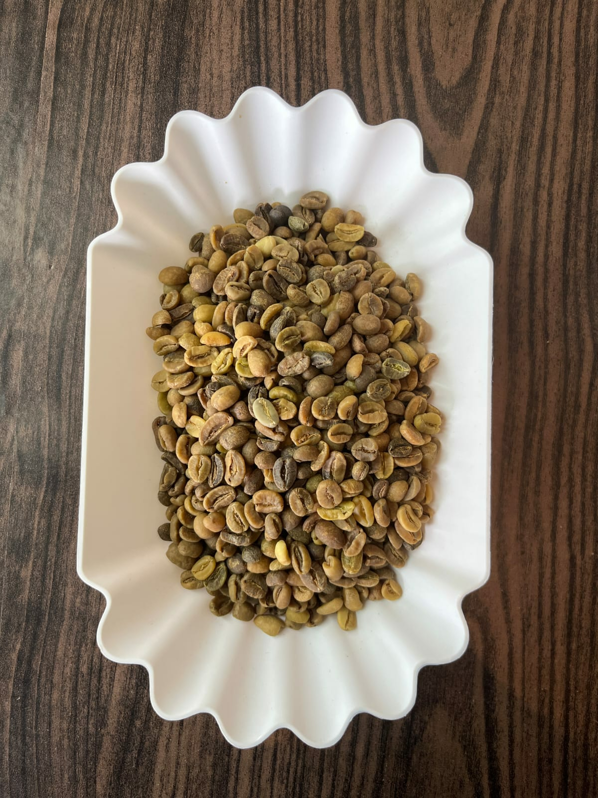
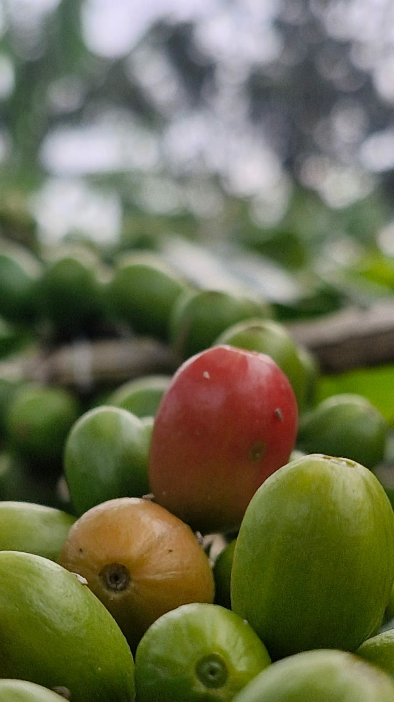
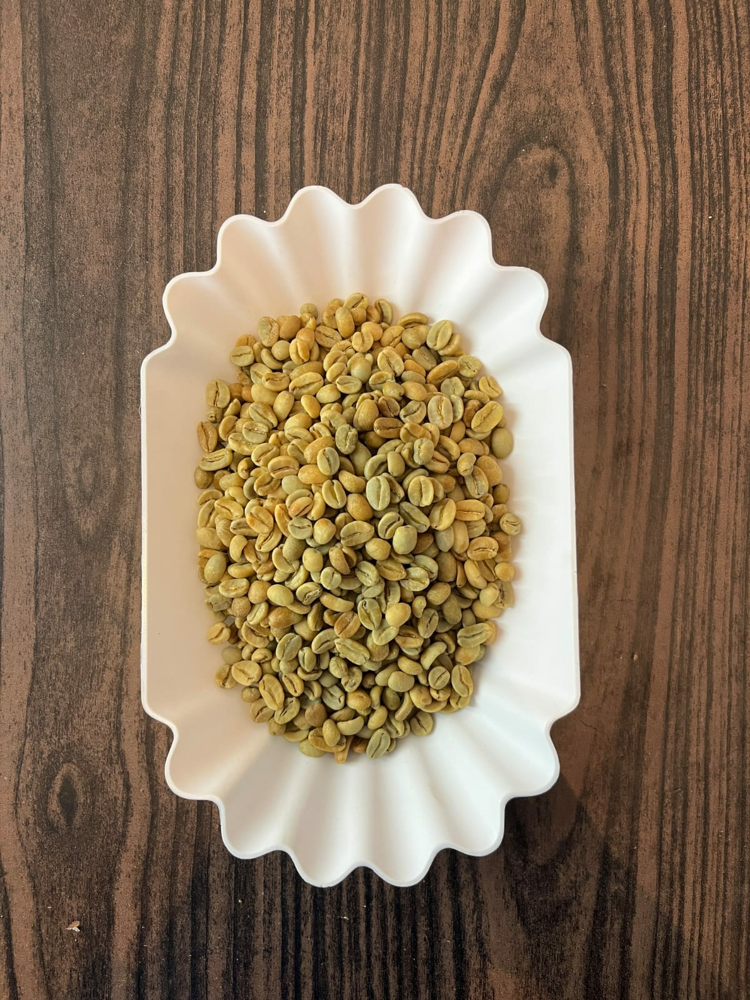

Gayo Wild Luwak
Seroja Signature Heritage
Dari tanah Gayo yang subur, lahir keistimewaan kopi dengan karakter autentik dan cita rasa yang tak terlupakan.
Kenali Seroja
Dari tanah Gayo yang subur, lahir keistimewaan kopi dengan karakter autentik dan cita rasa yang tak terlupakan.
Kenali SerojaBekerja dengan sepenuh hati
Dari mengenal kebun hingga menyajikan kopi, kami ingin setiap langkah punya arti.

Kami adalah Seroja Coffee Estate, cerminan dari keseimbangan antara manusia dan alam di dataran tinggi Gayo. Kami tumbuh dari akar petani, namun berpikir seperti perancang sistem yang mencari harmoni antara rasa, waktu, dan keberlanjutan

Kami adalah Seroja Coffee Estate, cerminan dari keseimbangan antara manusia dan alam di dataran tinggi Gayo. Kami tumbuh dari akar petani, namun berpikir seperti perancang sistem yang mencari harmoni antara rasa, waktu, dan keberlanjutan.

Kami adalah Seroja Coffee Estate, cerminan dari keseimbangan antara manusia dan alam di dataran tinggi Gayo. Kami tumbuh dari akar petani, namun berpikir seperti perancang sistem yang mencari harmoni antara rasa, waktu, dan keberlanjutan.
Dari kebun hingga proses
Mengenal pilihan produk dan proses kopi dari Gayo, dirawat dengan alam dan dikerjakan dengan teliti.

Luwak liar Gayo dengan proses natural, pilihan kopi yang membawa cerita alam dan asalnya.
Natural
Metode semiwash atau giling basah, salah satu proses pascapanen kopi Gayo.
wash
Fullwash, proses pengolahan kopi dengan pencucian sebelum biji dikeringkan.
washBuah kopi dikeringkan utuh; dikenal juga sebagai dry process.
Dry
Proses pengeringan dengan sebagian lapisan lendir buah kopi tetap melekat pada biji.
DryAsal kopi Seroja
Menelusuri wilayah origin kopi Seroja di dataran tinggi Aceh.

Origin kopi SerojaBener Meriah, dataran tinggi Gayo
Tumbuh bersama
Angka dan rincian di bawah adalah data contoh untuk rancangan ini, bukan klaim dampak operasional.
| Wilayah | Origin | Petani mitra | Fokus kolaborasi |
|---|---|---|---|
| Aceh | Gayo | 35 | Kualitas pascapanen |
| Sumatra Utara | Lintong | 24 | Pengembangan profil rasa |
| Jawa Timur | Ijen | 18 | Eksplorasi kebun |
| Sulawesi Selatan | Toraja | 27 | Dokumentasi origin |
| Flores | Bajawa | 21 | Praktik budidaya berkelanjutan |
Seluruh jumlah dan fokus kolaborasi di tabel ini merupakan data dummy.
Cerita dan riwayat

Kami berteman dengan alam—menyambut kebaikannya, belajar dari tantangannya, dan terus berusaha berjalan selaras dengannya.
Cerita perjalanan kami sebelum hari ini—langkah demi langkah yang membentuk Seroja hingga sampai di titik sekarang.
Kami memilih bekerja dengan mitra yang berbagi nilai dan tujuan—menciptakan rantai kopi yang tidak hanya efisien, tetapi juga membawa kebaikan bersama.
Sebuah cerita dari kebun
Di dataran tinggi, musim dan tanah ikut menentukan rasa. Ada tangan-tangan yang merawat pohon, memilih buah matang, dan menjaga setiap prosesnya. Dari perjalanan sederhana itu, lahirlah secangkir kopi yang membawa kita lebih dekat pada asalnya.
Temukan kisah originTemukan rasa favoritmu
Catatan singkat tentang lokasi, varietas, dan karakter seduhan.
Varietas — Arabika
Karakter — Rempah, cokelat, body penuh.
Varietas — Arabika
Karakter — Manis, lembut, sentuhan kakao.

Varietas — Arabika
Karakter — Seimbang, floral, akhir rasa panjang.
Varietas — Arabika
Karakter — Citrus, karamel, aftertaste bersih.